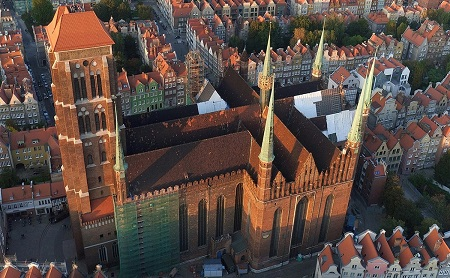

Kościół Mariacki w Gdańsku
30.12.2019 | 19:34:39 | MM
Konkatedralna Bazylika Mariacka zwana często „Koroną Gdańska” jest największą w Europie świątynią wybudowaną z cegły. Potężne jej mury i wieże wznoszą się wysoko nad panoramą miasta oraz nad rozległą okolicą.
Kamień węgielny pod obecną świątynię położono w uroczystość Zwiastowania Pańskiego 25 marca 1343 r. Świątynia budowana była etapami przez 159 lat. Dnia 28 lipca 1502 roku o godz. 16.00 mistrz Henryk Hetzel położył ostatnią cegłę sklepienia. Bazylika ma długość 105,5 m, szerokość w transepcie 66 m. Kubatura wynosi 155 000 m. Na 27 wolno-stojących filarach wspiera się wspaniałe sklepienie gwiaździste i kryształowe. Gdańska świątynia mariacka 20 listopada 1965 roku bullą papieska Pawła VI podniesiona została do godności Bazyliki Mniejszej.

Ratusz Głównego Miasta
Najokazalsza i najcenniejsza budowla świecka dawnego Gdańska, siedziba władz miasta. Budowany był od 1379 do 1492 roku. Hełm wieży o wysokości 80 m, stworzony przez mistrza Dirka Danielsa z Zelandii, wieńczy metalowy, złocony posąg króla Zygmunta Augusta. Trzy skrzydła obecnego dziedzińca ukończono w 1593-96 r. Pod koniec XVI wieku na jednym z narożników umieszczono zegar słoneczny z łacińską sentencją "Cieniem są dni nasze". Doszczętnie wypalony w 1945 r. odbudowywany był do 1970 r. Jest obecnie siedzibą Muzeum Historycznego Miasta Gdańska. Wnętrza ratusza utrzymane są w stylu manieryzmu niderlandzkiego. Najbardziej okazała - Wielka Sala Rady zwana również Salą Czerwoną uważana jest za jedno z najbogatszych nowożytnych wnętrz ratuszowych. Jej wystrój jest dziełem takich mistrzów jak Hans Vredeman de Vries, Izaak van den Blocke i Simon Herle. Strop sali zdobi 25 obrazów autorstwa Izaaka van den Blocke o wymowie symbolicznej. Najsłynniejsze z nich to "Apoteoza Gdańska".
Fontanna Neptuna
Stojąca od 1633 r. przed Dworem Artusa Fontanna Neptuna jest symbolem Gdańska. Inicjatorem jej powstania był burmistrz Gdańska Bartłomiej Schachmann. Postać Neptuna nawiązuje do związków Gdańska z morzem. Wymodelowali ją Peter Husen i Johann Rogge, a odlana została w 1615 roku w Augsburgu. Autorem projektu całej fontanny był Abraham van den Blocke. Otaczająca ją wspaniała krata pochodzi z 1634 r. W latach 1757-1761 Johann Karl Stender przekształcił w duchu rokoka misę i cokół fontanny, dodając całą plejadę stworów morskich. Według jednej z gdańskich legend to właśnie Neptun przyczynił się do powstania słynnej gdańskiej nalewki Goldwasser. Oburzony, iż do fontanny wrzucane są monety, uderzył trójzębem w wodę i rozbił złoto w drobne płatki, które odtąd zdobią swym blaskiem wspaniały ziołowy likier.
Byłeś już w Gdańsku? Podziel się swoimi doznaniami z innymi!
Marysia | 10.03.2019 | 19:39:01 Byłam polecam z całego serca!!
Papież | 10.03.2019 | 19:40:00 Było super
Komentarze czytelników